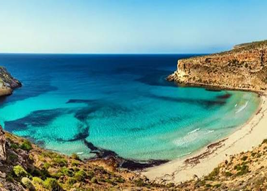

Lampedusa
L'isola più a sud d'Italia, famosa per la Spiaggia dei Conigli.

Composizione anagrafica
Età media bilanciata con presenza di nuclei familiari e giovani, grazie alla continuità dei servizi essenziali e di presidio territoriale.
Economia di sussistenza e lavoro stagionale
Pesca locale, indotto delle Forze dell'Ordine. Accoglienza, uffici pubblici e commercio essenziale.
Indice di contrazione demografica
Circa 1:8 (da circa 5.500 residenti invernali a oltre 40.000 presenze nel picco estivo).